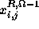
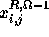

The energy functions constructed in Section 4 are valid at all resolutions. In this Section we sketch the method of Burt and Adelson [23] to obtain images at different resolutions.
 is the intensity value of the
is the intensity value of the  pixel
in the right image at resolution
pixel
in the right image at resolution  and 
is the intensity value of the
and 
is the intensity value of the  pixel at resolution
pixel at resolution  ,
which
is obtained using the algorithm proposed in [23]. Note that for
,
which
is obtained using the algorithm proposed in [23]. Note that for
 , i,j can take values in the range .
Similarly,
, i,j can take values in the range .
Similarly,
 and represents the intensity
of the left image at resolution
and represents the intensity
of the left image at resolution  and respectively.
and respectively.
The basic idea in the approach of [23] is : An image at a given resolution is lowpass filtered so that high spatial frequencies are removed, as a result we can sample it at a lower rate (typically one half) and hence we have an image of lower resolution and one half the size of the original image. This process of lowpass filtering and subsampling results in images which are at different resolutions. In addition, the difference images at different resolutions are obtained by upsampling the coarser image by a factor of 2, interpolating it, and then subtracting it from the next finer resolution image. The difference images so obtained are used by our algorithm to obtain the precomputed line fields at each resolution.
A suitable kernel for low pass filtering is used to obtain images
at different resolutions. If we assume a 1-D signal and the size of the
kernel to be 5, then as shown by Burt and Adelson [23] the weights
of the kernel, denoted by ,
 , , , , should satisfy the following constraints
, , , , should satisfy the following constraints
A  kernel from [23]
kernel from [23]
with , and , was used to convolve
with the high resolution image ( ) image; the convolved image
is then downsampled (for example, selecting every alternate pixel along each
row and column) to obtain the image at lower resolution (
) image; the convolved image
is then downsampled (for example, selecting every alternate pixel along each
row and column) to obtain the image at lower resolution ( ).
The process of obtaining the low resolution image and the difference image is
depicted in Figure 4, where the block
represents convolution with the kernel K above and
).
The process of obtaining the low resolution image and the difference image is
depicted in Figure 4, where the block
represents convolution with the kernel K above and
Figure 4: Procedure for obtaining multiresolution images
Figure 5: Image at resolution 256, 128, 64, 32, 16

Figure 6: Difference image at resolution 256, 128, 64, 32, 16